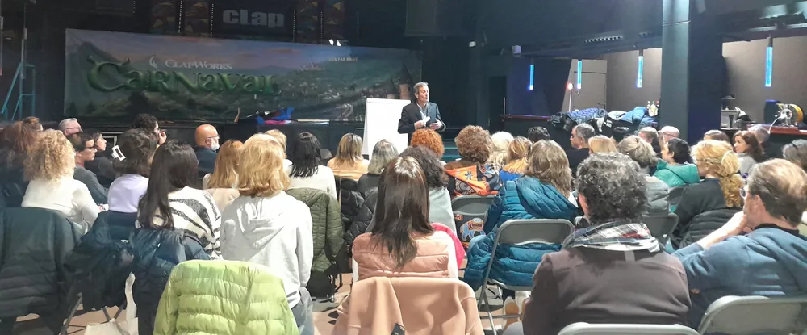
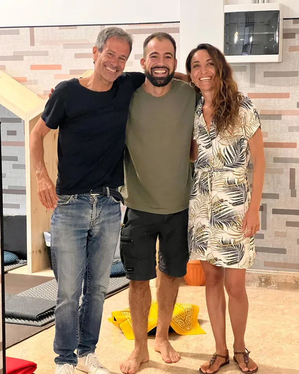
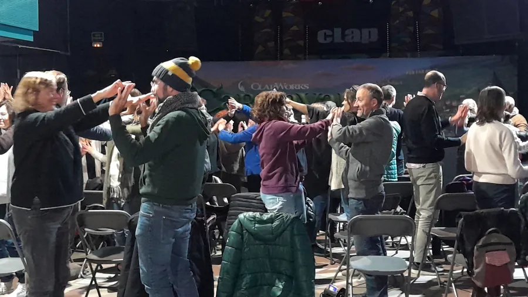

Vuelve a ti. Vive con dirección.
Acompañamiento terapéutico y life coaching para ver con claridad lo que hoy te pesa, reencontrar tu dirección y llevarte recursos que se quedan contigo.
- +18 añosacompañando procesos de crecimiento personal
- Formado en EE. UU.Spiritual Coach, Life Coach y PNL
- Ponenteen eventos internacionales
- Traductorde El Monje con Traje (Editorial Amat)
Hay momentos en los que la vida te pide parar y mirar
Una decepción en el trabajo. Una relación que duele. Un tema económico que no se resuelve. Un proyecto que no termina de nacer. Un cambio de vida, un duelo.
Sea cual sea tu momento, no tienes que atravesarlo a solas ni con prisas. Con Miquel puedes ahondar en cualquier aspecto de tu vida, paso a paso, hasta verlo con claridad.

De la confusión a la claridad
Una mirada práctica y una mirada espiritual, juntas. Así acompaña Miquel.
Claridad
Observar y desenredar lo que te ocurre, desde tu propia experiencia, sin juicio. Ver lo que antes no podías ver.
Dirección
Herramientas de coaching sencillas y poderosas que te llevan hacia tu corazón y te ayudan a reencontrar el rumbo.
Autonomía
Recursos que se quedan contigo y que puedes seguir aplicando por tu cuenta. Tú eres el maestro de tu propia transformación.
Elige por dónde empezar

Life Coaching y acompañamiento
Sesiones individuales para cualquier tema o desafío de tu vida.
Saber másProcesos con plantas medicinales
Procesos terapéuticos cuidados, con preparación previa e integración.
Saber más
Retiros y eventos
Talleres, charlas y retiros con El Último Viaje del Ego.
Ver retirosEl Monje con Traje
Traductor al español y facilitador del método de Raf Adams.
DescubrirNo se trata de darte respuestas, sino de acompañarte con amor y firmeza a encontrar las tuyas.
Más de 18 años acompañando procesos de transformación
Miquel Canut es terapeuta y life coach. Se formó en Estados Unidos como Spiritual Coach, Life Coach, en PNL y en Un Curso de Milagros, y acompaña procesos de crecimiento personal, como las heridas de infancia o el trauma, integrando distintas disciplinas para favorecer una comprensión profunda de uno mismo.
Es ponente en eventos internacionales y traductor al español de El Monje con Traje.
Leer su historia
Lo que dicen quienes ya han hecho el camino
Miquel me ha acompañado durante este tiempo en los cambios importantes de mi vida, tanto en sus sesiones de sanación como en las de coaching. Gracias a ello he podido encaminar mi vida con un nuevo propósito y un nuevo éxito profesional.Alicia S.Life coaching y acompañamiento
Llegué a Miquel en pleno cambio de trabajo, con mucha confusión y poca confianza en mí. En pocas sesiones empecé a ver con claridad qué quería y qué me estaba frenando. Lo que más valoro es que me llevé herramientas que sigo usando por mi cuenta.Laura M., BarcelonaLife coaching
Hice un retiro con Miquel y después seguí con él en sesiones individuales para integrar todo lo vivido. Me acompañó con mucho respeto y, a la vez, con firmeza. Hoy tomo mis decisiones desde un lugar más sereno y mucho más mío.Jordi P., SabadellRetiro e integración
Tres pasos, a tu ritmo
Escríbeme
Cuéntame en pocas líneas qué estás viviendo y qué te gustaría cambiar.
Primera conversación
Nos conocemos y vemos juntos si este acompañamiento es para ti. [Pendiente: duración y si es gratuita]
Tu proceso
Diseñamos las sesiones según tu momento. Te informo de las tarifas cuando me escribes. [Pendiente: modalidades: presencial, online o ambas]
Tu transformación empieza con una conversación
Escríbeme y te respondo personalmente.